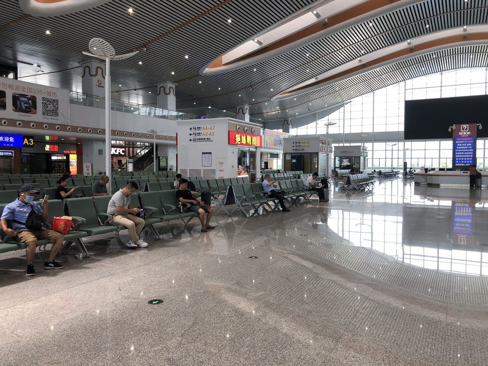
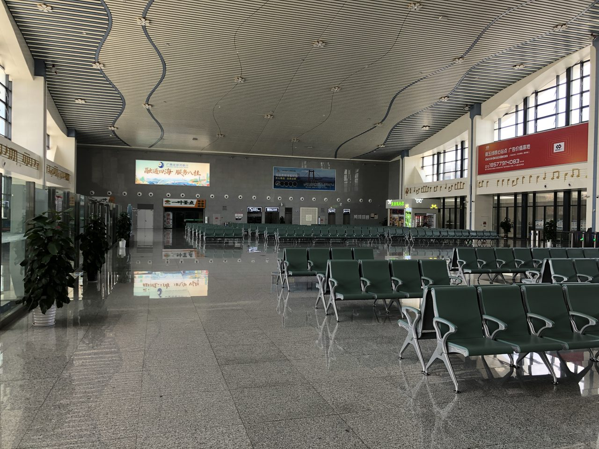

南玉高铁通车一年多了，一个略显尴尬的事实是：从玉林北站发出的所有高铁列车，目前100%只能开往南宁。一个建筑面积近5万平方米、设计日发送旅客2万人的大型枢纽站，却只能单向运行——这在高铁运营史上非常罕见。
但这个局面即将改变。南玉高铁的关键延伸段——玉林至岑溪（省界）段正在推进建设，计划2026年建成。届时，玉林将通过岑溪接入广东路网，从"终点站"蜕变为"中转站"。玉林北站不再只是一个"玉林人坐高铁去南宁"的出发站，而将成为桂东南连接粤港澳大湾区的双向枢纽。

这意味着什么？对品牌方来说，答案很简单：过去你只在覆盖2000万桂东南人口的站内投广告，未来你将面对的是一个连通广西与广东的双向7000万级客群走廊。
一、南玉高铁的"双向困境"与破局在即
先厘清现状。南玉高铁（南宁东—玉林北段）2024年12月30日通车，全长193公里，设计时速350公里。通车后，玉林到南宁的最快时间从原来的约2小时压缩到约48分钟，玉林正式进入"高铁时代"。但问题也同时暴露了：
受南宁东站车场结构限制——南玉高铁接入的是南宁东站的南广场，而南广场与贵南高铁、南广高铁所在的其他车场之间缺乏直接轨道连接线——玉林方向列车到达南宁东后无法转入其他方向线路。这就造成了"高铁孤岛"现象：玉林北站车型先进、站房宽敞，但列车开行方向只有一个——往南宁。

这个限制的影响不仅限于玉林一城。河池的贵南高铁南下列车无法经玉林直达珠三角，梧州前往贵阳的动车每天仅2趟、需要绕道柳州桂林行程超6小时。整个桂东南与桂西北的高铁联系，被南宁东这个"咽喉"卡住了。
但破局点也在推进中。玉岑段（玉林北—岑溪东—省界）作为南玉高铁向广东方向的自然延伸，正在施工建设，目标2026年建成通车。这条线一旦打通，玉林将不再依赖南宁东作为唯一的对外通道——从玉林北站出发，向东经岑溪进入广东罗定，接入广东高铁网，直通珠三角。
二、变化的本质：从"省内循环"到"跨省流动"
玉岑段通车带来的变化，不是简单的"多了一条线路"——而是整个客流结构的质变。
| 对比维度 | 通车前（当前） | 通车后（2026年后） |
|---|---|---|
| 客流方向 | 单一方向：玉林→南宁 | 双向流动：玉林↔南宁 + 玉林↔广东 |
| 辐射人口 | 桂东南约2000万 | 桂东南+大湾区约7000万 |
| 客群特征 | 桂东南本地商务、探亲为主 | 本地客群 + 广东商人、投资者、旅游者 |
| 品牌投放逻辑 | 面向"走出去"的本地品牌 | 同时面向"走进来"和"走出去"的双向品牌 |
| 广告位价值 | 区域性传播节点 | 跨省品牌走廊核心节点 |
这个变化的核心商业含义是：玉林北站的高铁广告位，正在从一个"区域性传播工具"升级为"跨省品牌走廊的战略入口"。这对不同行业品牌的价值完全不同。
三、谁最应该关注这个窗口期？——五大行业前置布局分析
窗口期最大的价值不在于"通车后立刻投广告"，而在于"通车之前以当前价格锁定未来价值"。下面逐一分析五大行业的布局逻辑：
1. 桂系特色农产品品牌：从"省内知名"到"湾区抢购"
玉林牛巴、容县沙田柚、陆川猪、兴业三黄鸡——桂东南特色农产品一直面临的问题是：产品好但品牌知名度走不出广西。玉岑段通车后，广东消费者坐高铁来玉林只需要2小时左右，周末"高铁逛吃"将成为大湾区中产的新消费习惯。
品牌前置策略：在通车前就在玉林北站出站通道部署灯箱广告，让每一个从广东方向到达的旅客一出站就看到你的品牌。等到通车后客流涨上来再投，价格大概率已经涨了。
2. 玉林中医药健康产业：承接大湾区康养需求外溢
玉林是"南方药都"，拥有全国第三大中药材市场。广东人口老龄化加速、健康消费升级，但土地和人力成本高企。玉岑段通车后，玉林中医药康养产业将迎来大湾区"银发流量"和健康消费需求的双重转移。
品牌前置策略：在玉林北站候车厅LED大屏（152.52㎡）和出站层包柱灯箱组（146.16㎡）进行品牌形象曝光，配合"来玉林·寻好药"等主题内容，在通车前建立认知，通车后直接收割。
3. 粤系消费品牌：反向抢占桂东南下沉市场
广东的茶饮、餐饮、零售连锁品牌一直有"向西扩张"的动力，但此前受限于交通不便——从广州自驾到玉林要近6个小时，品牌管理人员和供应链团队差旅成本太高。高铁通车后，广州到玉林预计缩短到约2-3小时，"大湾区品牌+桂东南市场"的组合将变得经济可行。
品牌前置策略：粤系品牌可以在玉林北站候车厅刷屏机（14块28面双面屏）进行品牌形象预告——"XX品牌，即将登陆玉林"——这是一种以极低成本在新市场建立第一印象的方式。
4. 文旅与会展品牌：抓住"双向旅游"红利
玉林有大容山国家森林公园、云天文化城、真武阁等文旅资源，横州有茉莉花文化旅游节。玉岑段通车后，这些目的地对大湾区游客的吸引力将大幅提升。反之亦然——广东的长隆、华侨城、珠海海洋王国等文旅品牌，也可以通过在玉林北站投放广告来"截流"桂东南出游人群。
这是少有的"投一个站，吃两个市场"的机会。
5. 工业与建材品牌：面向玉林产业升级需求
玉林工业经济增速居广西前列，家具、陶瓷、机械制造等产业正在冲刺4000亿产值目标。玉岑段通车后，广东的先进制造企业、建材供应商、工业设备公司将更容易进入玉林市场——无论是设立办事处还是参与招投标，差旅效率将大幅提升。高铁站广告在这个时候起到的作用是：让玉林本地企业在出站时就注意到你的品牌存在，为后续商务接触打好第一印象。
四、现在的行动清单：在通车前该做三件事
如果品牌方认可"通车前布局"的逻辑，以下是三条具体建议：
第一，先锁定一个优质点位。玉林北站出站口正对面灯箱E20（13.7m×4.4m，60.28㎡，12万/月）、出站层包柱灯箱组F1-F6（1组6个24面，146.16㎡，15万/组/月）——这些是目前价格还没反映"广东方向开通后"预期价值的核心点位。等到官宣通车日期之后再询价，大概率不是这个价。
第二，准备两套投放内容。一套面向"玉林本地客群"（日常商务+探亲），一套面向"广东方向客群"（周末旅游+商务考察），利用刷屏机和LED大屏的分时段播放能力灵活切换。
第三，关注玉岑段工程进度。基建项目有延期可能，不要等到官宣通车日期再启动广告投放计划。提前3-6个月与媒体运营商建立合作关系，确保通车当天你的广告已经挂在出站通道了。品牌在"第一波客流"中就占据曝光位置，远比等大家都在投了再进场效果好得多。
五、结语：最好的入场时间，永远是"别人还没动"的时候
南玉高铁玉岑段的开通，将彻底改变玉林北站的战略定位。它不仅是一个"送玉林人去南宁"的出发站，更将成为桂东南与粤港澳大湾区之间的品牌走廊核心节点。从区域市场的2000万覆盖人口，到跨省双向流动的7000万级辐射面——这个增量红利，先动的人吃大头。
在广告投放领域，有一条不变的规律：当所有人都看清楚一个机会的时候，这个机会的成本优势已经消失了。玉岑段通车之前，玉林北站的广告位价格反映的是"省内单向小枢纽"的价值；通车之后，价格将逐步反映"跨省双向大枢纽"的价值——中间的价差窗口期，就是品牌方应该抓住的战略红利。
广西联屏传媒科技有限公司 是南珠高铁南玉段（玉林北站、横州站、兴业南站）及南宁机场T2航站楼广告媒体的独家运营商。如需了解南玉高铁广告投放方案，或在玉岑段通车前锁定玉林北站优质点位，欢迎联系：李洪鑫 18878774848（微信同号）。